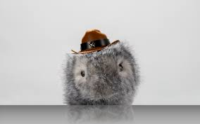
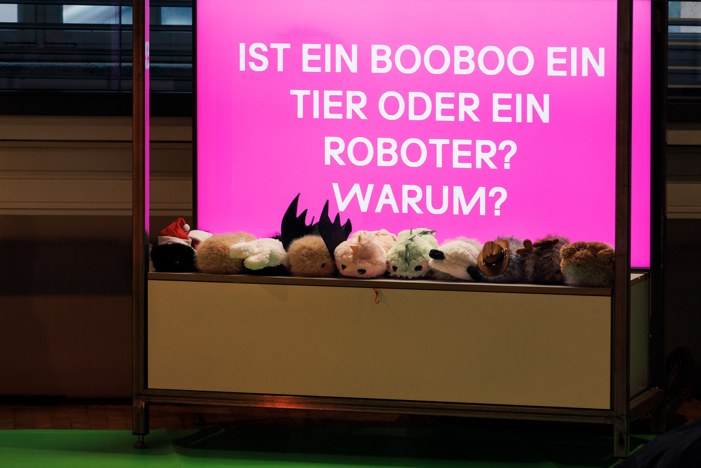

An Interactive Installation for Early Childhood Engagement with Technology
A project by ZKM | Hertzlab in collaboration with
Karlsruhe Institute of Technology (KIT)


At the ZKM, the Electronic Petting Zoo is being created as a place where preschool children can gain early experience with technology. Ten robotic guinea pigs, which respond to touch and voice commands, are entrusted to children for a limited time.
Through playful interaction, the installation enables a child-friendly exploration of a question that will become increasingly important in the future: Is it alive – or is it just pretending?
The Electronic Petting Zoo creates a safe and engaging environment in which children can interact with artificially animated objects that exhibit lifelike behavior. The robotic guinea pigs react to physical contact and spoken cues, encouraging emotional engagement while prompting reflection on the nature of living versus non-living entities. We created individual personalities for each of the robot pet to anthropomorphize them to foster a connection with the kids.
Alongside its public presentation, the Electronic Petting Zoo is accompanied by a planned research project at the Karlsruhe Institute of Technology (KIT). Together with Prof. Dr. Kathrin Gerling , Professor of Human-Machine Interaction and Accessibility at the Institute for Anthropomatics and Robotics (IAR), the project investigates whether and how kindergarten-aged children can recognize and learn the difference between living animals and artificially animated objects.
Morning visits for kindergarten groups are available by appointment. These supervised visits offer a systematic way to gain insights into early childhood human–machine interactions.
The Electronic Petting Zoo positions itself as a contribution to a cultural infrastructure that enables children—regardless of background or language skills—to participate in increasingly complex technological progress.
Through the interplay of artistic practice and scientific research, experiential spaces are created that foster social skills while simultaneously providing early access to technological, ethical, and social questions surrounding artificial intelligence and robotics.
Learn more about the individual robotic pets:
https://zkm.de/de/2025/11/elektronischer-streichelzoo